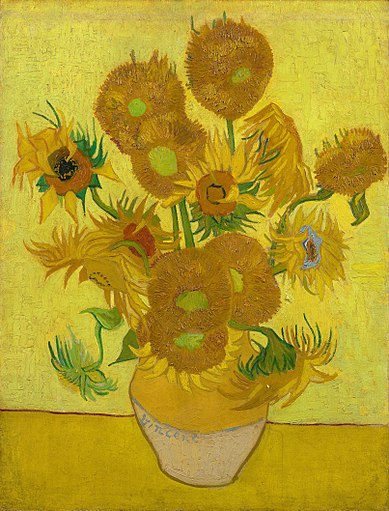
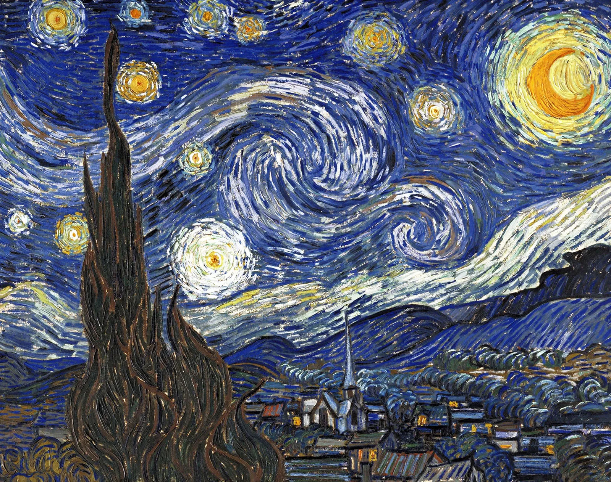

VINCENT VAN GOGH
"I dream my painting and i paint my dream"
- vincent Willem van GOGH
Who's Van Gogh?
Vincent Willem van Gogh was a Dutch Post-Impressionist painter who posthumously became one of the most famous and influential figures in the history of Western art. In a decade, he created about 2,100 artworks, including around 860 oil paintings, most of which date from the last two years of his life. They include landscapes, still lifes, portraits, and self-portraits characterised by bold colours and dramatic, impulsive and expressive brushwork that contributed to the foundations of modern art. He was not commercially successful and, struggling with severe depression and poverty, committed suicide at the age of 37. - wikipedia
Van Gogh was born into an upper-middle-class family. As a child he was serious, quiet and thoughtful. He began drawing at an early age and as a young man worked as an art dealer, often traveling, but became depressed after he was transferred to London. He turned to religion and spent time as a Protestant missionary in southern Belgium. He drifted in ill health and solitude before taking up painting in 1881, having returned home to his parents. His younger brother Theo supported him financially; the two kept a long correspondence by letter.

Around the world, people recognize this man with a red beard and an earnest look in his eyes. Vincent van Gogh painted about 35 self-portraits in total, most of them in Paris. For him, this was a way of practising portrait painting. His intention was not to portray himself as realistically as possible. He used the Neo-Impressionist style here, with short, rough brushstrokes. These alternate with longer strokes, such as the orange in his beard.

You can almost feel the dryness and heat in this painting of the flat landscape around Arles in the south of France. Van Gogh combined the azure blue of the sky with yellow and green tones for the land to capture the atmosphere of a summer’s day. He worked in the wheatfields for days at a time under the burning sun. This was an immensely productive period, in which he completed ten paintings and five drawings in just over a week, until a heavy storm brought the harvest season to an end.

This simple still life of a pot of chives has a decorative pattern in the background. It is unclear exactly what Van Gogh was painting – maybe wallpaper or part of an Oriental carpet. The symmetry of the composition is broken by the chive stems on the right, next to the pot.
Ordinary chives have round, hollow leaves; these garlic chives have flat ones with pointed ends.

what did van Gogh accomplish?
During his 10-year artistic career, Vincent van Gogh created a vivid personal style, noted for its striking colour, emphatic brushwork, and contoured forms. His achievement is all the more remarkable for the brevity of his career and considering the poverty and mental illness that dogged him.